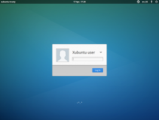
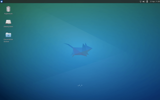

Xubuntu
 Xubuntu
Xubuntu  ist eine offizielle Variante von Ubuntu mit der Desktop-Umgebung Xfce. Das Hauptaugenmerk der Entwickler richtet sich auf einen Kompromiss zwischen traditioneller Desktop-Benutzung und Ubuntu-Komfort. Während Xfce verhältnismäßig moderate Anforderungen an die Hardware stellt, gilt das nicht zwingend auch für Xubuntu.
ist eine offizielle Variante von Ubuntu mit der Desktop-Umgebung Xfce. Das Hauptaugenmerk der Entwickler richtet sich auf einen Kompromiss zwischen traditioneller Desktop-Benutzung und Ubuntu-Komfort. Während Xfce verhältnismäßig moderate Anforderungen an die Hardware stellt, gilt das nicht zwingend auch für Xubuntu.
Die Xubuntu-Version 16.04 besitzt einen LTS-Status und erhält damit ab dem Veröffentlichungstermin 3 Jahre Updates und Unterstützung durch die Entwickler.
Geschichte¶
Innerhalb von Ubuntu startete Xfce zunächst als Community-Projekt. Es war in den Versionen Ubuntu 5.04 und Ubuntu 5.10 lediglich aus der Paketquelle universe nachinstallierbar. Seit Juni 2006 bzw. Ubuntu 6.06 gibt es die Desktop-Umgebung Xfce als eigene offizielle Version von Ubuntu – Xubuntu.
Kritiker bemängeln, dass neuere Versionen ab Xubuntu 8.04 fast den gleichen Speicherbedarf wie ein Ubuntu mit GNOME oder KDE haben. Dies liegt daran, dass Xubuntu inzwischen viele Komfortmerkmale aus Ubuntu übernommen hat. Damit lässt sich die ursprüngliche Geschwindigkeit und der geringe Speicherbedarf von Xfce nicht mehr erreichen. Dennoch ist Xubuntu – beispielsweise für Umsteiger von Windows XP – eine sehr empfehlenswerte Alternative.
Wer sich mit Ubuntu auskennt, kann sich mit einer Minimalinstallation und den Meta-Paketen xorg sowie xfce4 eine eigene Desktopumgebung erstellen. Weitere interessante Distributionen mit Xfce sind im Wiki-Artikel Alte Hardware zu finden.
| 14.04 - Startvorgang |
|  |
| 14.04 - Grafische Anmeldung |
|  |
| 14.04 - Desktop |
Weitere Bilder gibt es in der Ubuntu-Bildergalerie und im Artikel Xubuntu/Bilder.
Hardwareanforderungen¶
Die tatsächlichen Anforderungen an die Hardware sind abhängig von den individuellen Ansprüchen des Benutzers. Die hier beschriebenen Mindestanforderungen orientieren sich deswegen ausschließlich an der Software-Zusammenstellung, die Xubuntu standardmäßig mitbringt. Es werden dabei die gängigsten Anwendungsfälle Büroarbeit und Surfen im Internet betrachtet. Theoretisch können die Anforderungen noch unterboten werden, wenn man bei den Anwendungsprogrammen nachträglich noch eine leistungsorientierte Auswahl trifft.
Arbeitsspeicher: mindestens 512 MiB. 768 MiB RAM oder mehr werden für flüssiges Arbeiten empfohlen.
Prozessor: mindestens Pentium 4, Pentium M oder AMD K8 (siehe auch Problembehebung weiter unten)
Grafikkarte: prinzipiell egal, aber es gibt auch problematische Karten (siehe Alte Hardware)
Festplattenspeicher: mindestens 4 GiB (ohne Benutzerdaten). In der Praxis ist eher das doppelte oder mehr angebracht.
Unterschiede¶
Im Vergleich mit einen "reinen" Xfce sind unter Xubuntu nicht nur etliche Programme vorinstalliert (siehe nächster Abschnitt), sondern auch ein paar Spezialitäten vorhanden.
Displaymanager¶
Xubuntu nutzt wie viele andere Ubuntu-Varianten den Displaymanager LightDM zur Verwaltung der grafischen Anmeldung. Der Artikel LightDM-GTK+ Einstellungseditor beschreibt, wie man den Anmeldebildschirm grafisch konfigurieren kann.
Indicator Applets¶
Jede Desktop-Umgebung bietet ein Benachrichtigungsfeld (systray) im Panel, so auch Xfce. Speziell bei Xubuntu ist zu beachten, dass man dort die Benachrichtigungsanzeige (Indicator Applets) von Ubuntu übernommen hat, die aber nur mit dafür geeigneten Programmen funktioniert. Es kann daher sinnvoll sein, beide Möglichkeiten zu nutzen (siehe Xfce Panel).
Light Locker¶
Ab Xubuntu 14.04 hat Light Locker den klassischen Bildschirmschoner XScreenSaver abgelöst.
Panel¶
Mit 14.04 ist das zweite Panel verschwunden, das bei Xubuntu traditionell am unteren Bildschirmrand vorhanden war und bei Bedarf automatisch eingeblendet wurde. Es kann jedoch leicht wieder eingerichtet werden - siehe Xubuntu 14.04 - unteres Panel vergessen? im Forum.
Tastenkürzel¶
Leider verwenden Xfce und Xubuntu unterschiedliche Tastenkürzel (siehe Xfce-Einstellungen).
Whisker Menu¶
Ab 14.04 setzt Xubuntu nicht mehr auf das klassische Xfce-Hauptmenü, sondern auf die Neuentwicklung Whisker Menu. Dieses besitzt große Ähnlichkeit mit den Startmenüs von Windows XP, Vista und Windows 7. Selbstverständlich kann auf Wunsch des Nutzers das alte Hauptmenü wiederhergestellt werden, in dem man dieses wieder zum Panel hinzufügt und Whisker Menu entfernt.
X2Go-Kompatibilität¶
X2Go ist ein Programm, mit dem man einen (oder mehrere) entfernte Rechner bequem im lokalen Netzwerk (LAN) oder über das Internet nutzen kann. So lassen sich beispielsweise rechenintensive Anwendungen auf entsprechend ausgerüstete Systeme verlagern und der eigene, nicht so leistungsstarke Rechner dient nur noch zur Anzeige der Ergebnisse. Xubuntu gehört zu den offiziellen Ubuntu-Varianten, mit denen X2Go perfekt kombiniert werden kann.
Programme¶
Xubuntu ergänzt die Desktop-Umgebung Xfce mit einer Reihe vorinstallierter Anwendungen aus den offiziellen Paketquellen (siehe auch Standardanwendungen). Nachfolgend eine Übersicht zur Orientierung:
| Standardanwendungen von Xubuntu | ||
| Bereich | Anwendung | Programm |
Büro | Textverarbeitung | Abiword |
| Dokumentenbetrachter | Evince | |
| Kalender | Orage | |
| Tabellenkalkulation | Gnumeric | |
Grafik | Bildbearbeitung | GIMP |
| Bildbetrachter | Ristretto | |
| Scanprogramm | Simple Scan | |
Internet | Webbrowser | Firefox |
| Instant Messenger | Pidgin | |
| IRC Client | HexChat | |
| Thunderbird | ||
| BitTorrent Programm | Transmission | |
Multimedia | Audioplayer | Gmusicbrowser |
| Lautstärkeregler | Pulse Audio Lautstärkeregler | |
| Videoplayer | Parole | |
System | Netzwerkmanager | NetworkManager |
| Einbinden lokaler und entfernter Dateisysteme | Gigolo | |
| Paketverwaltung | Ubuntu Software | |
| Zubehör | Dateisuche | Catfish |
| Archivmanager | File Roller | |
| Taschenrechner | Gcalctool | |
| Menübearbeiter | MenuLibre | |
| Editor | Mousepad | |
| Dateimanager | Thunar | |
| Terminalemulator | Terminal | |
| Brennprogramm | Xfburn | |
Diese Programme können jederzeit ersetzt oder durch weitere nachinstallierte ergänzt werden. Anregungen sind im Artikel Xfce empfohlene Anwendungen zu finden.
Problembehebung¶
PAE¶
Ältere Computer (meist Notebooks), deren Prozessoren die vom Ubuntu-Kernel benötigte Physical Address Extension (PAE) zwar besitzen, aber deren Vorhandensein verschweigen, benötigen ab 14.04 die zusätzliche Bootoption forcepae, damit Xubuntu startet. Dies gilt sowohl für das Live-System bzw. zur Installation als auch im installierten System.
Sollte es nach der Installation des Betriebssystems bei der Aktualisierung des Kernels zu Fehlermeldungen kommen, dann wurde diese Bootoption möglicherweise während der Installation nicht korrekt in die Konfiguration des Bootmanagers GRUB 2 übernommen und muss einmalig manuell in der Datei /etc/default/grub nachgetragen werden.
GRUB_CMDLINE_LINUX="forcepae"
Anschließend wie bei GRUB 2 üblich die Konfiguration aktualisieren.
Adobe Flash¶
Mit dem AMD K7 und anderen älteren Prozessoren ohne SSE2 kann Adobe Flash nicht mehr verwendet werden. Xubuntu selbst müsste theoretisch noch möglich sein.
Abiword¶
Abiword ist nach dem Wechsel der Grafikbibliothek GTK von Version 2 auf 3 sehr träge und kann auf älteren Geräten praktisch nicht mehr eingesetzt werden. Sofern die Hardwareanforderungen für Xubuntu erfüllt sind, ist alternativ die Verwendung von LibreOffice Writer zur Textverarbeitung durchaus möglich (dann unbedingt diesen Hinweis beachten!). Als weitere, deutlich sparsamere Alternativen kommen unter Umständen Editoren wie FocusWriter oder Ted in Frage, die im plattformübergreifenden Rich-Text-Format (RTF) speichern können.
Eine relativ anspruchsvolle Möglichkeit, Abiword weiter mit GTK 2 zu nutzen, wird im Artikel Abiword/Kompilieren beschrieben.
Links¶
Xubuntu.org
- Offizielle Projektseite von XubuntuAlte Hardware - Informationen zur Weiternutzung alter Computer
Xfce - Die Desktop-Umgebung von Xubuntu
- Erstellt mit Inyoka
-
 2004 – 2017 ubuntuusers.de • Einige Rechte vorbehalten
2004 – 2017 ubuntuusers.de • Einige Rechte vorbehalten
Lizenz • Kontakt • Datenschutz • Impressum • Serverstatus -
Serverhousing gespendet von